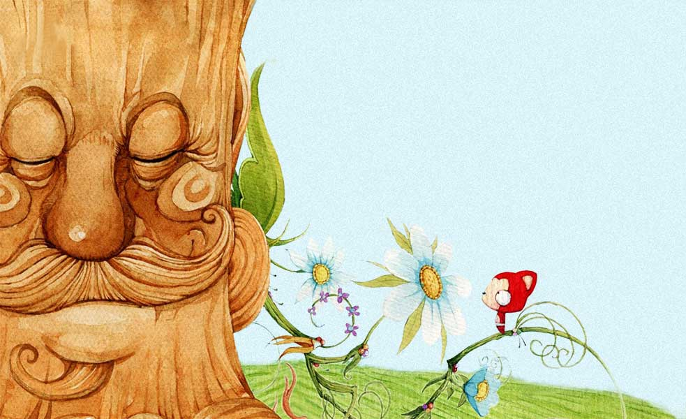

大撅头 ❤ 小撅头 一周年
按键盘 "↓" 开始倾听这个故事。
很久很久以前，有个帅气的小伙计，名唤“大撅头”。他做什么事情都不喜欢自己一个人

一个人逛街。

一个人看看天。

一个人坐车。

一个人回家。

但好在他从小就幸福地生活在快乐的家庭里。

直到他离开熟悉的环境，去开辟自己的天地。

尽管距离家乡1700多公里，他也很快能够轻松的应对。

希望身边的朋友每天都能笑嘻嘻。

然而生活也不会总是一帆风顺。

四年之后他将要再次离开这篇饱含感情的土地。


就在这时，上天跟他说身边的缘分要记得珍惜。
最后的一周他天天都在犹豫，想要掩饰，含糊过去。

他去问大树，我要保护的那个人真的在这里？
大树告诉他，不要等错过了才懂得珍惜。

最后这一次，他决定无所畏惧。
即使被拒绝也没有懦弱、退缩显得可惜。

然而他没有想到，多年之后会对当初这个决定无比感激。

她的名字唤作“小可爱”，因为她的出现，大撅头再也没有感受过一个人的失意。

一个傻boy变成两个小小傻boy。每天都充满快乐，

惊喜。

大撅头很高兴，感觉整个人智商都降低。

而后他们一起去看最美的风景。

挽着手一起走过了每一寸土地。

在旅行结束的时候依然不想接受这突如其来的分离。

但是这一次，大撅头相信，
尽管要接受严酷的磨砺，仍然可以坚定不移。

小可爱不在身边的日子，他每天都希望能在梦里相遇。

万万没想到，想念的力量真的可以让两个人汇聚。

在大撅头的家乡，他们又争分夺秒地一起嬉戏。

尝遍很早就说要去品尝的新鲜玩意。

8月份，他们住到了一起。

大撅头想要捣鼓一些没试过的东西。

————黑暗料理

而“泡面”也成了他们庆祝的时候最佳的餐饮。

每天坐同一辆车一起上班，又可以牵着手回到最温暖的家里。
大撅头很开心。
因为他知道自己爱的人也很爱他。

偶尔也会因为自己欠考虑引起爱的怀疑。

这不是大撅头的本意。


比起电视剧里那些人的遭遇，其实他们是很幸福滴。
没有小可爱在身边，窗外的风景就显得不那么亮丽。

没有小可爱在背后


飞得再高再远又有什么意义！
就算生活在遇到再多阴雨。
烦恼也会随着满载喜悦的信封被邮寄出去。


在流行划过时偷偷在心中默许。
做梦都想和小可爱一直幸福的地在一起。

一起经受时间的磨砺，
一起打造属于他们自己的天地。


时间流逝得那么不经意 转眼， 就到了一周年的纪念日期。

想想后面还有一辈子 等老了再慢慢去回忆。 还要到所有好玩的地方去
大撅头也会继续认真努力
为了他们的将来坚持下去。

大撅头很幸福，因为他找到了小可爱。
就算呆呆地坐着都很有趣。

无论是多么渺小的一件琐事，小到无法引起旁人注意，两人都会笑成傻逼。这就是属于大撅头和小可爱的幸福生活。


小可爱：你为什么笑得这么傻？
大撅头：我想想。
大撅头：因为看见你被逗笑的脸心里就好像吃了蜜。
小可爱：唔~
愿得chen chen心，白首不相离


一周年快乐！
I love you

大撅头和小可爱的故事会一直继续下去。
这便是最美满的结局。
-- 按“Esc" 键有惊喜
-- 点击左上角按钮也有惊喜~